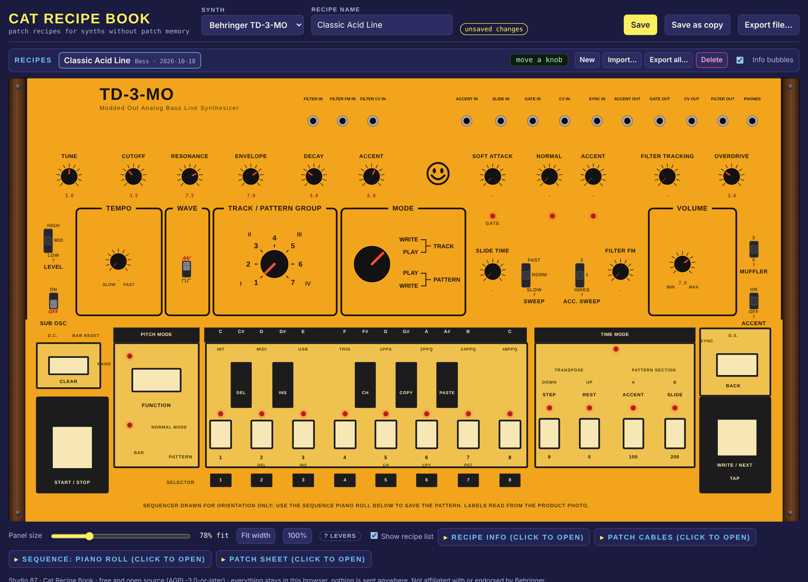

TD-3-MO recipe book

Part of the Studio 87 cat plugin suite. Free and open source.
Manual (PDF)Intro, quick start, controls and tips. Source codeAGPL-3.0-or-later.
Part of the Studio 87 cat plugin suite. Free and open source.
Manual (PDF)Intro, quick start, controls and tips. Source codeAGPL-3.0-or-later.